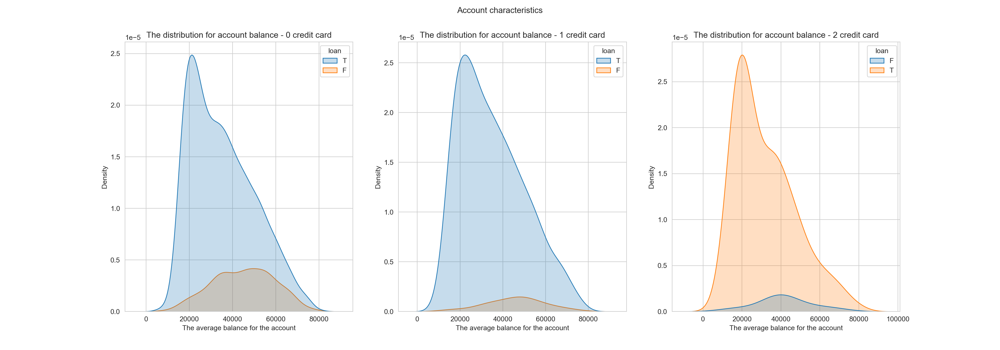
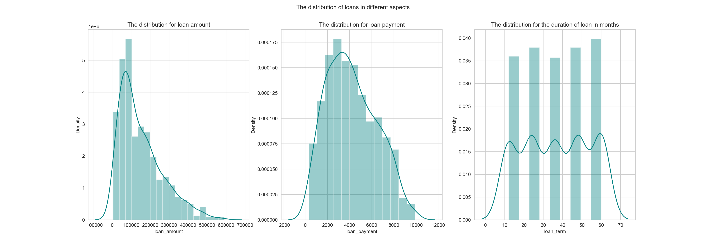
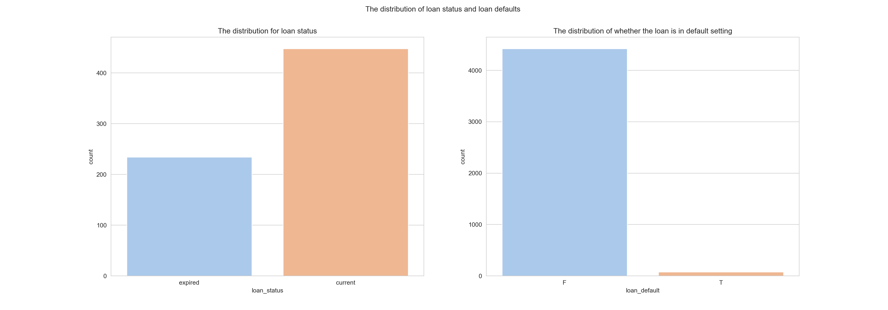
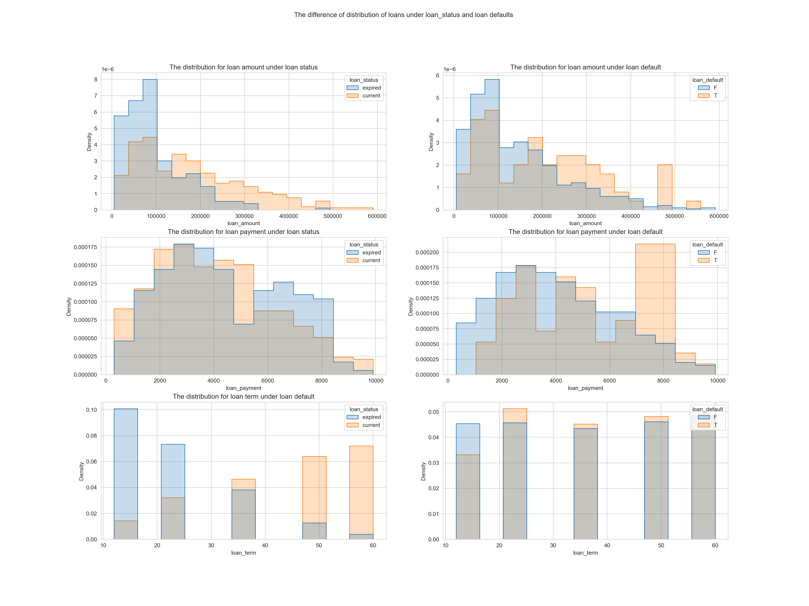
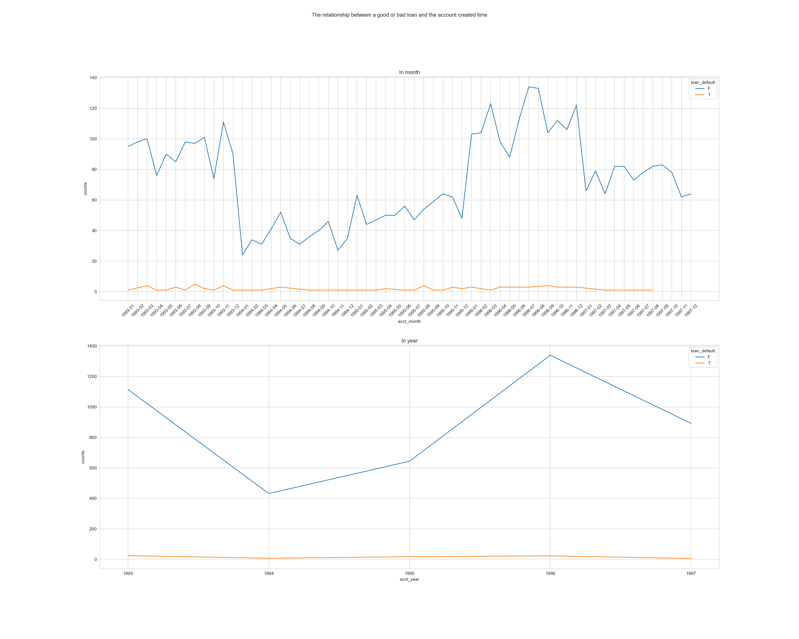
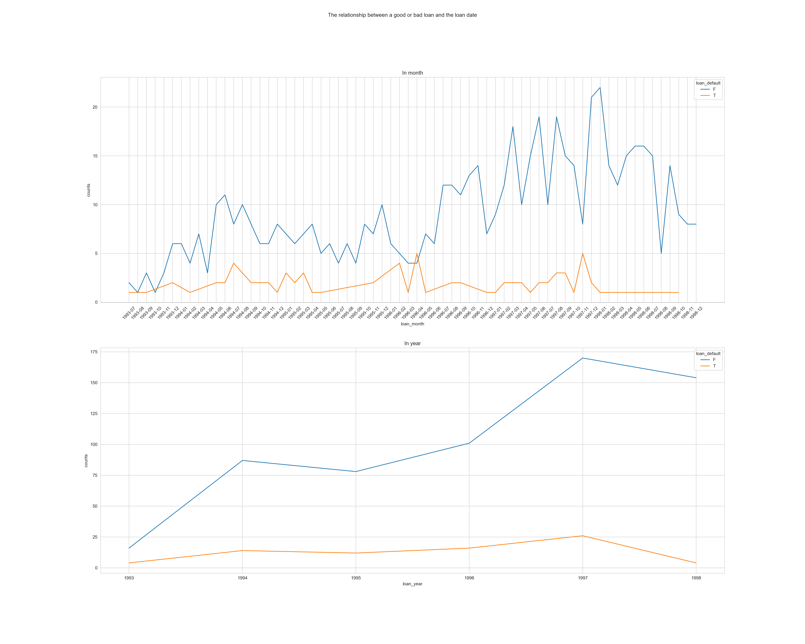
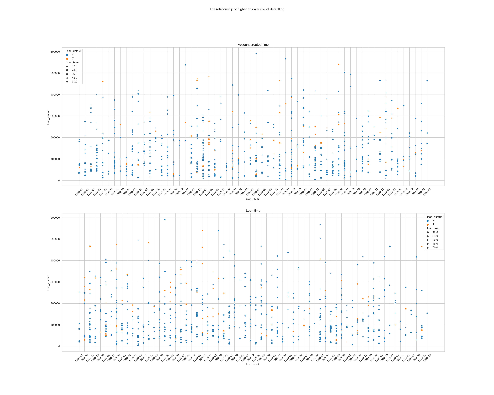
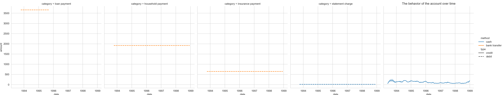
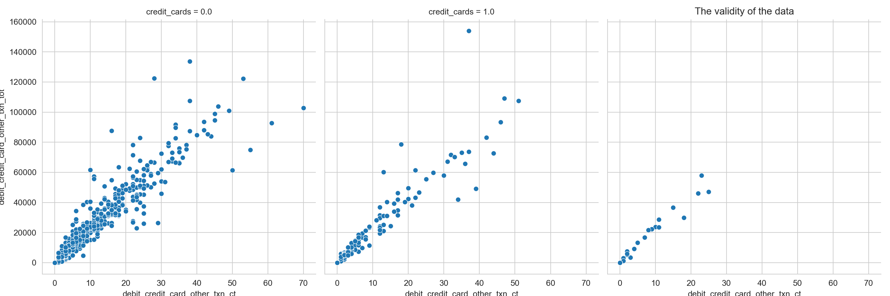

import pandas as pd
import numpy as np
import matplotlib.pyplot as plt
import datetime
import warnings
import seaborn as sns
sns.set_style("whitegrid")
color = sns.color_palette("Paired")transactions = pd.read_csv("data/transactions.csv")
analytical = pd.read_csv("data/accounts_analytical.csv")
for idx, row in analytical.iterrows():
if analytical.loc[idx, "loan_default"] == 1:
analytical.loc[idx, "loan_default"] = "T"
else:
analytical.loc[idx, "loan_default"] = "F"
warnings.filterwarnings('ignore')for idx, row in analytical.iterrows():
if pd.isna(analytical.loc[idx, "loan_amount"]):
analytical.loc[idx, "loan"] = "T"
else:
analytical.loc[idx, "loan"] = "F"
if pd.isna(analytical.loc[idx, "credit_cards"]):
analytical.loc[idx, "credit_cards"] = 0
transactions_gy = transactions.groupby(["account_id"])['balance'].agg(['mean'])
analytical_df = analytical[["account_id", "credit_cards", "loan"]]
df_1 = analytical_df.merge(transactions_gy, on = ["account_id"], how = "left")
df_0 = df_1[df_1.credit_cards == 0]
df_11 = df_1[df_1.credit_cards == 1]
df_2 = df_1[df_1.credit_cards == 2]
warnings.filterwarnings('ignore')fig, ax = plt.subplots(1, 3, figsize=(20, 7))
fig.suptitle('Account characteristics')
sns.kdeplot(data = df_0, x="mean", hue ="loan", fill=True, ax=ax[0])
ax[0].set_title('The distribution for account balance - 0 credit card')
ax[0].set_xlabel('The average balance for the account')
ax[0].set_ylabel('Density')
sns.kdeplot(data = df_11, x="mean", hue ="loan", fill=True, ax=ax[1])
ax[1].set_title('The distribution for account balance - 1 credit card')
ax[1].set_xlabel('The average balance for the account')
ax[1].set_ylabel('Density')
sns.kdeplot(data = df_2, x="mean", hue ="loan", fill=True, ax=ax[2])
ax[2].set_title('The distribution for account balance - 2 credit card')
ax[2].set_xlabel('The average balance for the account')
ax[2].set_ylabel('Density')
plt.show()
warnings.filterwarnings('ignore')fig, ax = plt.subplots(1, 3, figsize=(20, 7))
fig.suptitle('The distribution of loans in different aspects')
sns.distplot(analytical["loan_amount"], hist = True, color="teal", ax=ax[0])
ax[0].set_title('The distribution for loan amount')
sns.distplot(analytical["loan_payment"], hist = True, color="teal", ax=ax[1])
ax[1].set_title('The distribution for loan payment')
sns.distplot(analytical["loan_term"], hist = True, color="teal", ax=ax[2])
ax[2].set_title('The distribution for the duration of loan in months')
plt.show()
warnings.filterwarnings('ignore')fig, ax = plt.subplots(1, 2, figsize=(20, 7))
fig.suptitle('The distribution of loan status and loan defaults ')
sns.countplot(x="loan_status", palette="pastel", data=analytical, ax=ax[0])
ax[0].set_title('The distribution for loan status')
sns.countplot(x="loan_default", palette="pastel", data=analytical, ax=ax[1])
ax[1].set_title('The distribution of whether the loan is in default setting')
plt.show()
warnings.filterwarnings('ignore')fig, ax = plt.subplots(3, 2, figsize=(20, 15))
fig.suptitle('The difference of distribution of loans under loan_status and loan defaults ')
sns.histplot(analytical, x="loan_amount", hue="loan_status", element="step",
stat="density", common_norm=False, ax=ax[0, 0], legend = True)
ax[0, 0].set_title('The distribution for loan amount under loan status')
sns.histplot(analytical, x="loan_amount", hue="loan_default", element="step",
stat="density", common_norm=False, ax=ax[0, 1], legend = True)
ax[0, 1].set_title('The distribution for loan amount under loan default')
sns.histplot(analytical, x="loan_payment", hue="loan_status", element="step",
stat="density", common_norm=False, ax=ax[1, 0], legend = True)
ax[1, 0].set_title('The distribution for loan payment under loan status')
sns.histplot(analytical, x="loan_payment", hue="loan_default", element="step",
stat="density", common_norm=False, ax=ax[1, 1], legend = True)
ax[1, 1].set_title('The distribution for loan payment under loan default')
sns.histplot(analytical, x="loan_term", hue="loan_status", element="step",
stat="density", common_norm=False, ax=ax[2, 0], legend = True)
ax[2, 0].set_title('The distribution for loan term under loan status')
sns.histplot(analytical, x="loan_term", hue="loan_default", element="step",
stat="density", common_norm=False, ax=ax[2, 1], legend = True)
ax[2, 0].set_title('The distribution for loan term under loan default')
#fig.delaxes(axes[0])
plt.show()
warnings.filterwarnings('ignore')df = analytical[["account_id", "acct_creation_date",'loan_date', 'loan_amount', 'loan_payment',
'loan_term', 'loan_status', 'loan_default']]
df['acct_creation_date'] = pd.to_datetime(df['acct_creation_date'])
df['acct_month'] = df['acct_creation_date'].dt.strftime("%Y-%m")
df['acct_year'] = df['acct_creation_date'].dt.strftime("%Y")
df_groupedby_month = df.groupby(['acct_month', 'loan_default']).size().reset_index(name='counts')
df_groupedby_year = df.groupby(['acct_year', 'loan_default']).size().reset_index(name='counts')
warnings.filterwarnings('ignore')fig, ax = plt.subplots(2, 1, figsize=(25, 20))
fig.suptitle('The relationship between a good or bad loan and the account created time')
sns.lineplot(data=df_groupedby_month, x = "acct_month", y = "counts", hue = "loan_default",
palette = "tab10", legend = "auto", ax=ax[0])
ax[0].set_title('In month')
ax[0].tick_params(axis='x', labelrotation=45)
sns.lineplot(data=df_groupedby_year, x = "acct_year", y = "counts", hue = "loan_default",
palette = "tab10", markers=True, dashes=False, legend = "auto", ax=ax[1])
ax[1].set_title('In year')
plt.show()
warnings.filterwarnings('ignore')df = analytical[["account_id", "acct_creation_date",'loan_date', 'loan_amount', 'loan_payment',
'loan_term', 'loan_status', 'loan_default']]
df['loan_date'] = pd.to_datetime(df['loan_date'])
df['loan_month'] = df['loan_date'].dt.strftime("%Y-%m")
df['loan_year'] = df['loan_date'].dt.strftime("%Y")
df_groupedby_loan_month = df.groupby(['loan_month', 'loan_default']).size().reset_index(name='counts')
df_groupedby_loan_year = df.groupby(['loan_year', 'loan_default']).size().reset_index(name='counts')
warnings.filterwarnings('ignore')fig, ax = plt.subplots(2, 1, figsize=(25, 20))
fig.suptitle('The relationship between a good or bad loan and the loan date')
sns.lineplot(data=df_groupedby_loan_month, x = "loan_month", y = "counts", hue = "loan_default",
palette = "tab10", legend = "auto", ax=ax[0])
ax[0].tick_params(axis='x', labelrotation=45)
ax[0].set_title('In month')
sns.lineplot(data=df_groupedby_loan_year, x = "loan_year", y = "counts", hue = "loan_default",
palette = "tab10", markers=True, dashes=False, legend = "auto", ax=ax[1])
ax[1].set_title('In year')
plt.show()
warnings.filterwarnings('ignore')df = analytical[["account_id", "acct_creation_date",'loan_date', 'loan_amount', 'loan_payment',
'loan_term', 'loan_status', 'loan_default']]
df['acct_creation_date'] = pd.to_datetime(df['acct_creation_date'])
df['acct_month'] = df['acct_creation_date'].dt.strftime("%Y-%m")
df['acct_year'] = df['acct_creation_date'].dt.strftime("%Y")
df['loan_date'] = pd.to_datetime(df['loan_date'])
df['loan_month'] = df['loan_date'].dt.strftime("%Y-%m")
df['loan_year'] = df['loan_date'].dt.strftime("%Y")
warnings.filterwarnings('ignore')fig, ax = plt.subplots(2, 1, figsize=(25, 20))
fig.suptitle('The relationship of higher or lower risk of defaulting')
sns.scatterplot(data = df, x="acct_month", y="loan_amount", hue ="loan_default", style="loan_term", ax=ax[0])
ax[0].set_title('Account created time')
ax[0].tick_params(axis='x', labelrotation=45)
sns.scatterplot(data = df, x="loan_month", y="loan_amount", hue ="loan_default", style="loan_term", ax=ax[1])
ax[1].set_title('Loan time')
ax[1].tick_params(axis='x', labelrotation=45)
plt.show()
warnings.filterwarnings('ignore')max_transactions = transactions.groupby(['account_id']).size().reset_index(name='counts')
max_account_idx = max_transactions.loc[max_transactions['counts'].idxmax(axis = 1, skipna = True), "account_id"]
df = transactions[transactions.account_id == max_account_idx]
df['date'] = pd.to_datetime(df['date'])
df['month'] = df['date'].dt.strftime("%Y-%m")
df['year'] = df['date'].dt.strftime("%Y")
warnings.filterwarnings('ignore')
plt.figure(figsize=(20, 10))
ax = sns.relplot(data=df, x="date", y="amount", hue="method", style="type", col="category", kind="line")
plt.title('The behavior of the account over time')
plt.show()
warnings.filterwarnings('ignore')for idx, row in analytical.iterrows():
if np.isnan(analytical.loc[idx, "credit_cards"]):
analytical.loc[idx, "credit_cards"] = "0"plt.figure(figsize=(20, 10))
ax = sns.relplot(
data = analytical, x="debit_credit_card_other_txn_ct",
y="debit_credit_card_other_txn_tot", col="credit_cards")
plt.title('The validity of the data')
plt.show()
warnings.filterwarnings('ignore')